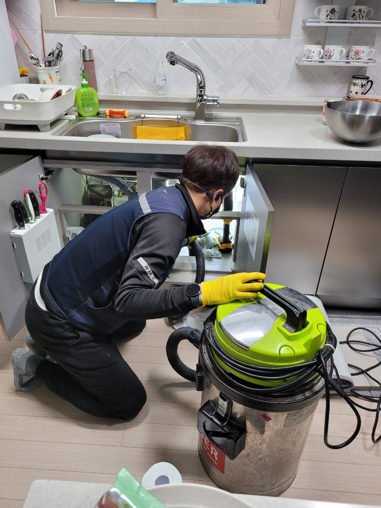
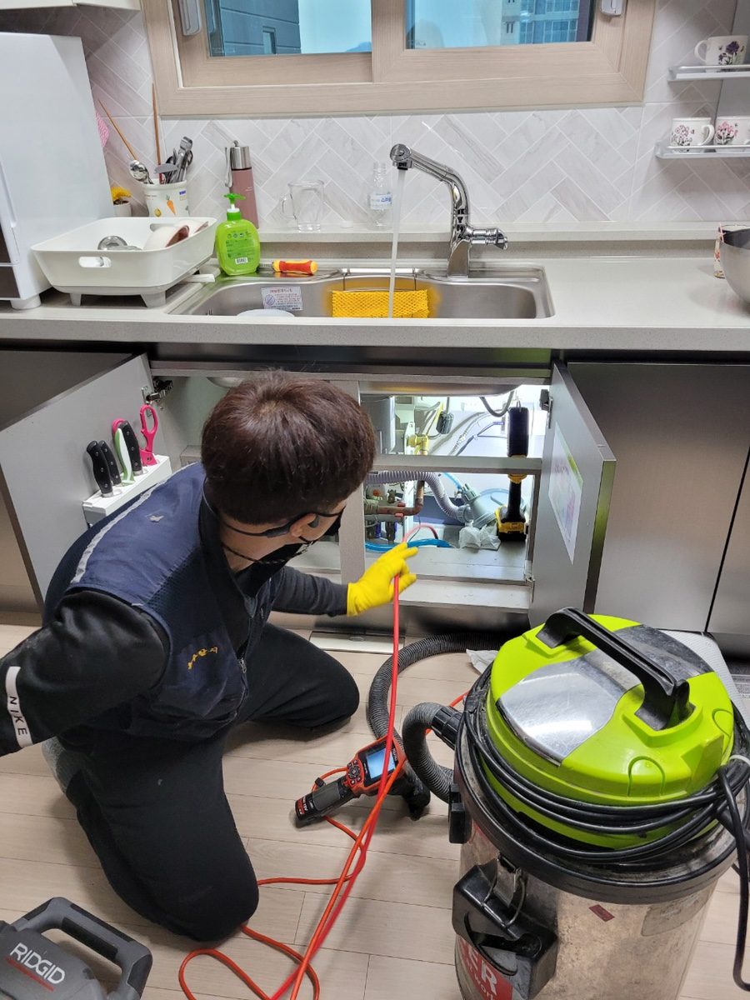
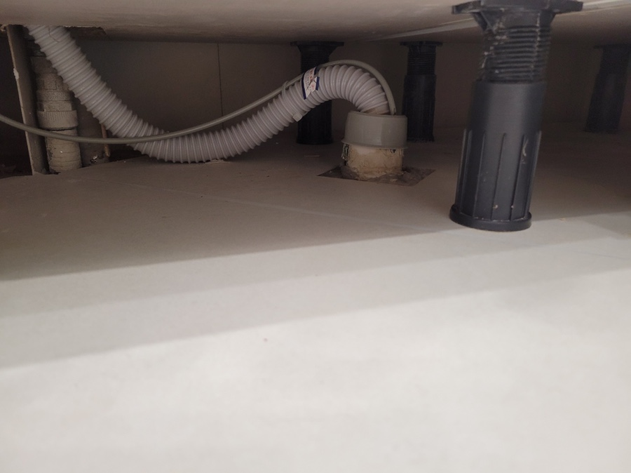
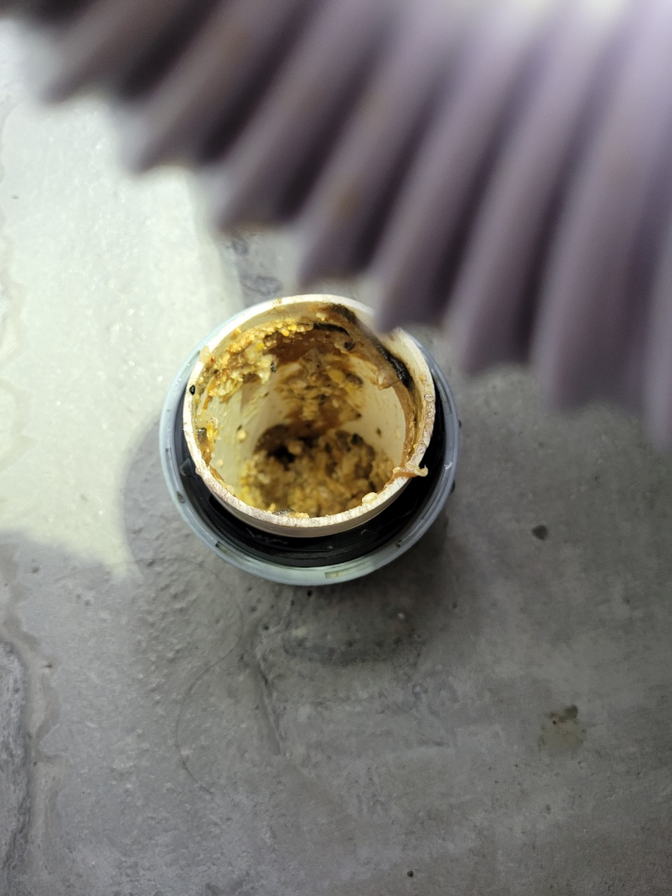
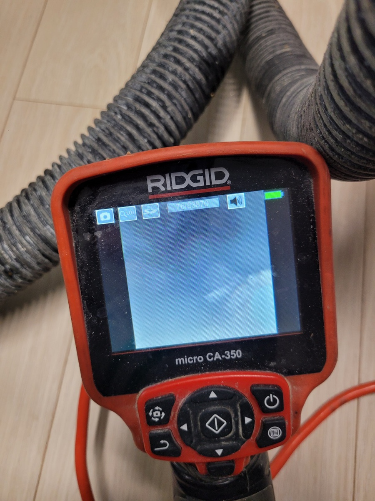
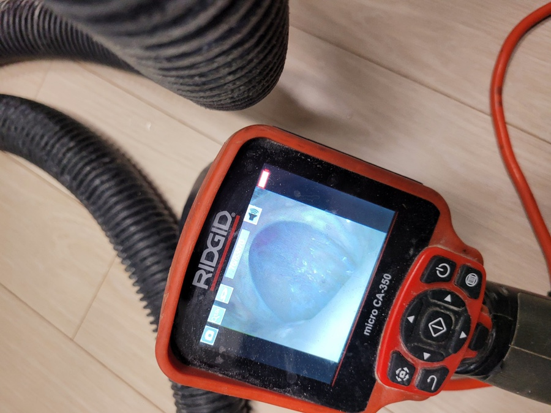

🏠 팔달구 하수구막힘은 하수구막힘에서
화성 싱크대막힘 전문 시공 후기

📋 작업 개요
- 위치: 화성
- 서비스 유형: 싱크대막힘, 하수구막힘, 배관막힘, 뚫는업체
- 작업 일시: 2022. 1. 23. 2:49
- 업체명: 하수구수사대 (010-5615-2118)
🔍 문제 상황
팔달구 하수구막힘은 팔달구하수구막힘에서
안녕하세요
"하수구 수사대" 입니다
우리의 일상생활에서 물은 빠트릴수 없을정도로
매우 중요한 존재인데요 일상 속 여러 군데에서
물이란 것을 사용하기 때문에 이러한 물을 배출하는
역할을 하는 배수구에 문제가 생긴다면 많은
불편함이 생길수 밖에 없습니다
여기서 알아두셔야 할 점이 하나 있습니다
하수구가 막혔을 경우 인터넷이나 원래 알고 있던
생각만을 가지고 셀프 해결을 하시려고 하시는 분들이
많으신데요 만일 셀프 해결을 통해 뚫렸다고 해도
얼마 안가 다시 막혀버릴 확률이 높다고 보시면 됩니다
그렇기에 하수구가 막혔을땐 정확한 원인을 찾아야기
때문에 반드시 전문가에게 의뢰를 부탁해야합니다
만일 단순히 막혀 있다는 생각만 가진 후
셀프 해결을 위해 억지로 뚫으려고 했다간
밑에 집에 큰 피해를 줄 수도 있기 때문에

🔎 원인 분석
💡 전문가 진단: 정밀 진단 장비를 사용하여 슬러지의 고착 여부를 판명하고 타격/세척 작업을 실시했습니다.
반드시 전문가에게 의뢰를 하시는걸 추천드립니다
그래도 하수구가 막혔을때 당장 어느업체를
부를지가 가장 고민이 되는 것이 분명한데요
배관에 문제 없이 빠르고 제대로 뚫어야 하기 때문이죠
서울/경기/인천 (수도권전지역)전지역
출장이 가능하고 주말,공휴일도 출장이 가능한 곳이
언제 어느때나 연락하기 좋기때문에
이런 모든 점이 가능한
팔달구 하수구막힘 전문 업체인 '하수구막힘'으로
연락 한통만 주신다면 언제 어디서나 방문하겠습니다
하수구에 제대로 된 관리가 이루어지지
않는다면 언젠가는 문제가 생기고 마는데요
예를 들자면 싱크대 하수구에 기름성분들이
배관에 응고되어 기름슬러지로 인해
막힌다던가 등등 이런 것들이 있을수 있겠죠
싱크대하수구가 막히는 원인의 TOP1이
아무래도 방금 말한 기름슬러지 때문일건데요
설거지를 할때 기름을 닦아낸다고 하더라도

🔧 작업 과정
기름은 설거지를 하는 과정에서 하수구로 배출
될 수밖에 없기에 오랜기간 기름기가 배관에
쌓이게 되면 기름이 응고되어 덩어리가 됩니다
물론 보통은 흘러나가지만 팔달구 하수구막힘 업체인
'하수구막힘'에서 본 대부분의 경우에서는
배관의 구배 즉 기울기라고 할 수 있겠죠
이 부분이 좋지 않아 쌓이는 경우가 많습니다
참고로 하수구 배관구조는 단순하고 짧을수록
좋은데요 요즘에는 배관도 길고 구조도 여러번
꺾인 구조라 구배나 기울기가 좋지 않은 곳이 많습니다
이러한 경우에 바로 팔달구 하수구막힘 전문업체인
'하수구막힘'의 내시경 카메라가 필요한데요
저희 팔달구 하수구막힘 업체 '하수구막힘'은
항상 최첨단 장비를 보유하고 있기 때문에
장비와 기술력이 함께 더해져 빠른 수리가 가능합니다
팔달구 하수구막힘 업체인 '하수구막힘'의
내시경 카메라로 확인해볼때 대부분의
배관에 기름 슬러지와 덩어리가 보여지는데요
90%가 배관 윗부분에 붙어있어 일부분이 떨어져
막힘 현상이 나타난 것을 확인할 수 있습니다
또한 , 기름슬러지는 시간이 오래 지날수록
단단해지기때문에 이런 것은 장비로도 해결이
안되는 것이 있는데요 이러한 것들은
석션장비로 빼내는 것이 최고의 방법입니다
팔달구 하수구막힘 업체인 '하수구막힘'에서는
언제나 다년간의 노하우와 기술력을 통해
막힌 하수구를 빠르고 정확하게 수리를 하고 있습니다
또한 언제 어디서나 연락만 주신다면
고객님이 편하신 날짜에 당일 방문이 가능하며


✅ 작업 완료
수리를 통해 편안한 일상생활을 돌려드리고 있습니다
혹시라도 작업을 진행 후 문제가 생겼을 시
작업 후 1년 동안의 AS가 가능하기 때문에
믿고 연락 주시면 감사하겠습니다
전화번호:010-2340-2118
경기도 화성시 효행로 1060 10층 1004-A246호
#하수구막힘 #하수구 #업체 #싱크대 #싱크대막힘
#수리 #하수구수리 #배관 #팔달구




⚠️ 주방 싱크대 배관 막힘 예방 수칙
- ✅ 기름기가 묻은 식기나 프라이팬은 설거지 전 키친타올로 반드시 기름때를 닦아내세요.
- ✅ 주기적으로 싱크대 개수대에 뜨거운 물을 가득 받아 한 번에 내려 배관 내부 기름을 씻어내세요.
- ✅ 배수구 거름망을 미세한 필터로 사용하시고 음식물 찌꺼기가 틈으로 새어 들지 않게 관리하세요.
- ✅ 베이킹소다와 식초를 뜨거운 물과 함께 일주일에 한 번씩 부어주면 배관 살균과 막힘 예방에 좋습니다.
💡 핵심 정리
- 확실한 장비 작업(내시경 점검 및 샤프트 스케일링)으로 원인을 뿌리 뽑습니다.
- 작업 후 1년 이내에 동일한 부위 재발 시 100% 무상 A/S 서비스를 보장합니다.
- 서울 · 경기 · 인천 전 지역에 24시간 언제든 긴급 출동할 수 있도록 항시 대기 중입니다.
❓ 자주 묻는 질문 (FAQ)
🚨 화성 싱크대막힘 문제로 고민이신가요?
정확한 원인 진단과 확실한 시공으로 재발 없는 해결을 약속드립니다.
24시간 긴급 출동 | 서울 · 경기 · 인천 전지역 | 1년 내 재발 시 무상 A/S